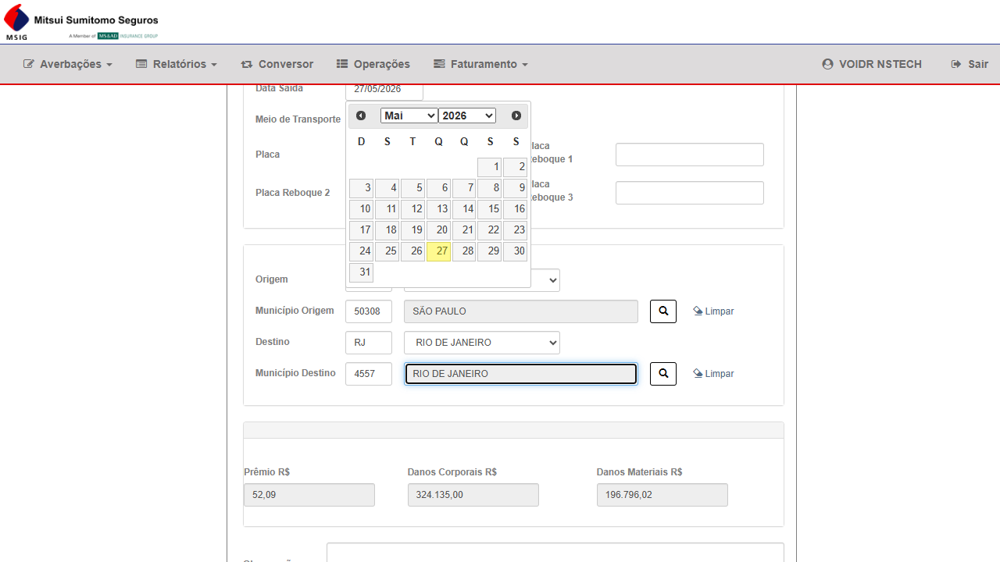
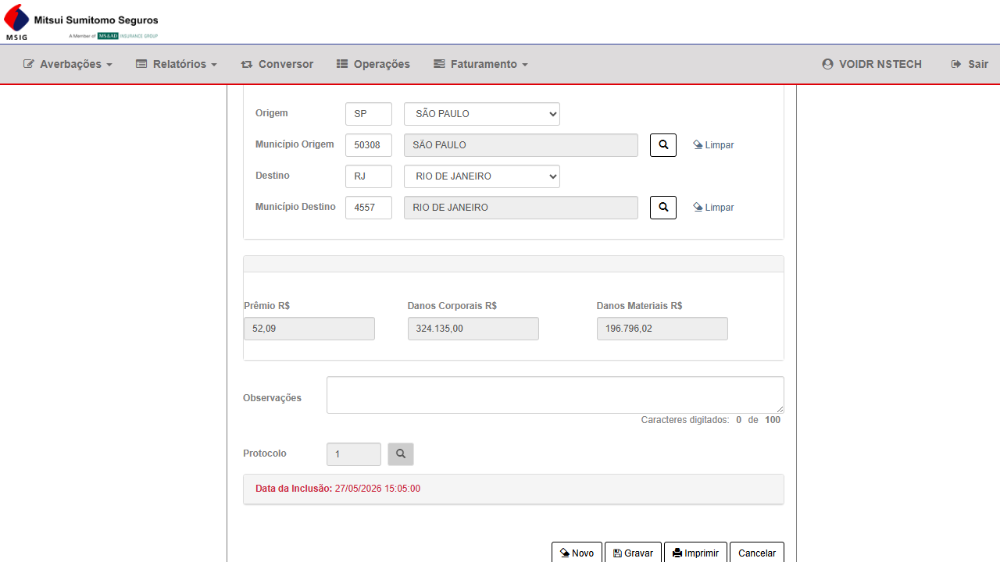
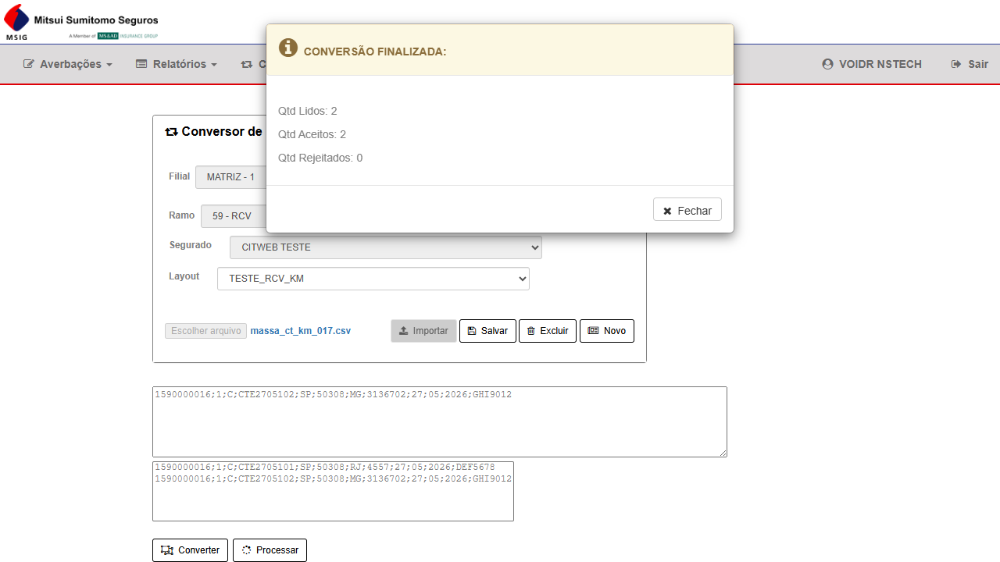
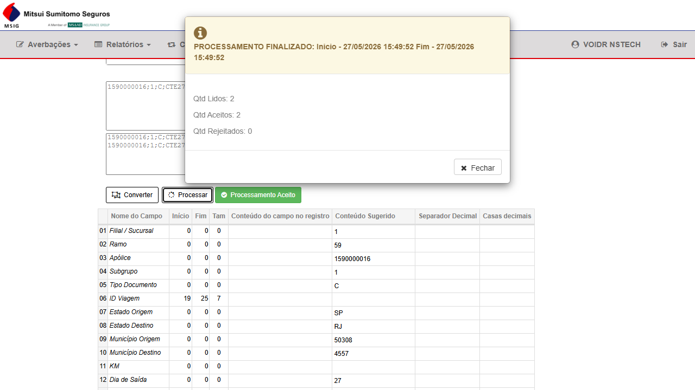
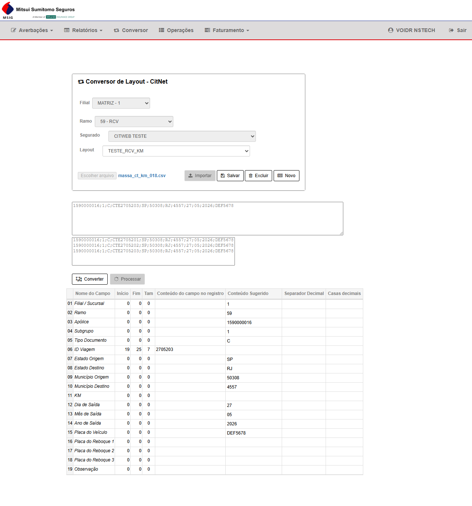
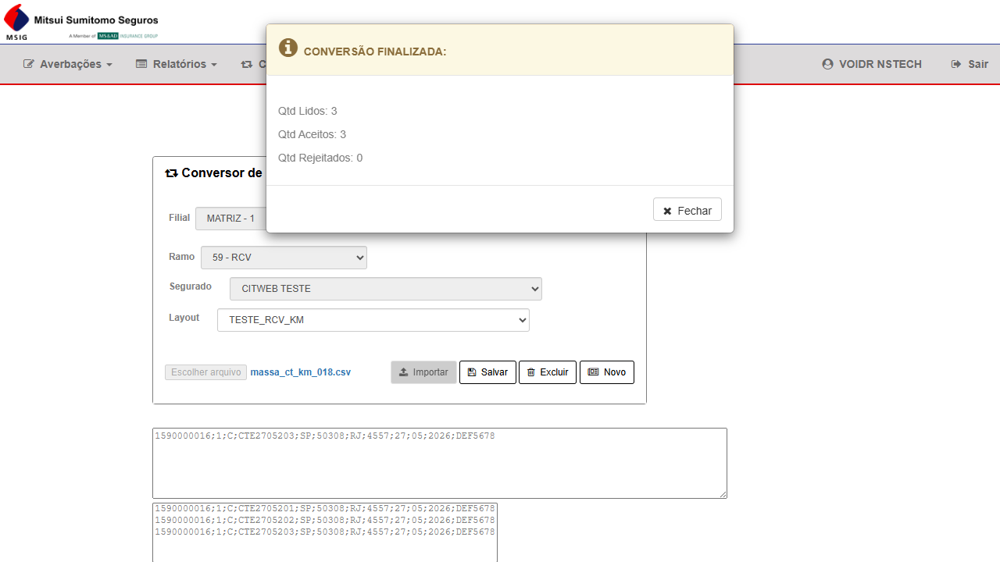
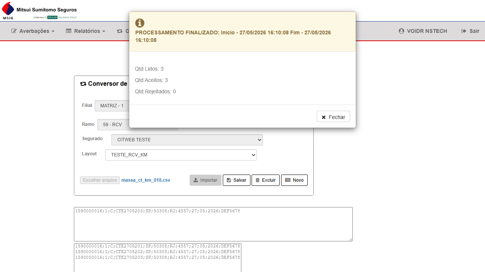
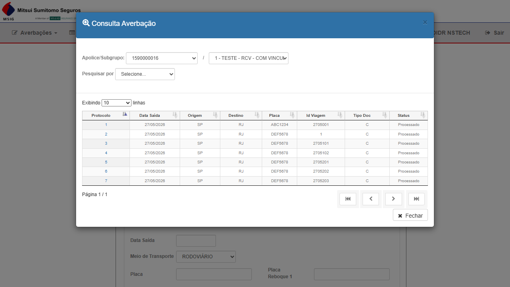
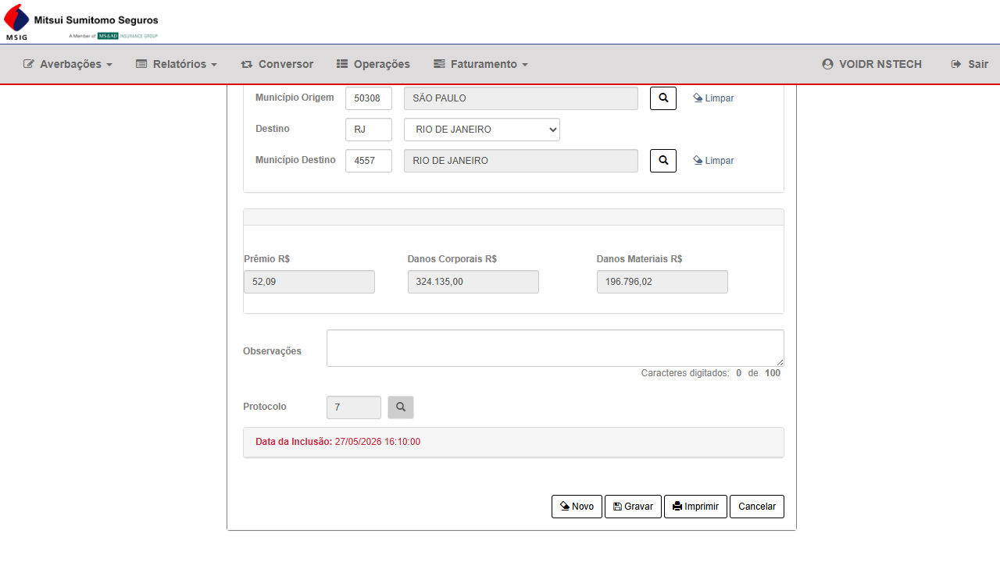

Andamento
O cálculo do prêmio de seguro RCV por quilometragem. Quando o segurado informa origem e destino de uma viagem, o sistema consulta uma API externa para obter a distância real e usa esse valor para calcular o prêmio. A funcionalidade afeta o CITWEB (digitação e recálculo), o CITNET (emissão via portal) e o processamento em lote (Batch).
- ✅ 15 cenários aprovados — CT-001 (API smoke), CT-022, CT-023, CT-024 validados — digitação, recálculos e API funcionando
- ⚡ 0 aguardando infraestrutura — WS/CTE não implantado (CT-021 bloqueado)
- ⏳ 3 ainda não testados — inclui CITNET e Batch (aguardam desenvolvimento)
- ✅ Sem reprovações até o momento
Task 6892 Done · CT-025 desbloqueado · Responsável: Andreia
CT-KM-021 aguarda cliente SOAP externo para entrada de averbações via arquivo
Grupos 6, 7 e 9 — sem previsão de entrega definida no momento
A condição comercial VKMCML (Prêmio por KM) no ramo RCV (59) não estava funcionando por ausência de quilometragem no cálculo do prêmio. Esta entrega integra CITWEB, CITNET e o processador Batch com uma API de KM dedicada, resolvendo o valor de KM em 3 camadas progressivas:
Detalhes técnicos: arquitetura de cache L1/L2/L3 — para desenvolvedores
ConcurrentDictionary scoped por request. Chave: par normalizado (origem, destino). Zero latência para o mesmo par dentro do mesmo request.L2 — Redis (cache distribuído): Prefixo
km:rcv:v1:, TTL configurável. Compartilhado entre requests. Fallback: degrada para L3 se Redis indisponível.L3 — Batch HTTP:
IKmBatchResolver agrupa averbações pendentes por municipio_origem, resolve em poucos POSTs e popula L1 + L2 com os resultados.
O KM retornado pela API é gravado em u_km_vgm e utilizado pela função FU_Calcula_Premio_RCV. A integração é aplicável a todas as seguradoras que possuam apólice RCV com condição VKMCML.
- Dado uma averbação no CITWEB
- Quando o sistema precisar calcular o prêmio
- Então deve consumir a API de KM enviando os dados necessários
- Dado que a API retornou a quilometragem
- Quando o cálculo do prêmio for executado
- Então o sistema deve utilizar o KM retornado pela API
- Dado que a API esteja indisponível ou retorne erro
- Quando o CITWEB tentar obter o KM
- Então o sistema deve:
- Exibir mensagem amigável ao usuário ou
- Aplicar regra de fallback definida (se houver)
- E registrar log do erro
- A integração deve registrar: requisição enviada, resposta recebida, erros ocorridos
- A integração deve funcionar para todas as seguradoras com apólice RCV e condição VKMCML
- Dado uma averbação no CITNET
- Quando o sistema precisar calcular o prêmio
- Então deve consumir a API de KM enviando os dados necessários
- Dado que a API retornou a quilometragem
- Quando o cálculo do prêmio for executado no CITNET
- Então o sistema deve utilizar o KM retornado pela API
- Dado que a API esteja indisponível ou retorne erro
- Quando o CITNET tentar obter o KM
- Então: mensagem amigável ou fallback definido + log do erro
- Registrar: requisição enviada, resposta recebida, erros ocorridos
- A integração deve funcionar para todas as seguradoras com apólice RCV e condição VKMCML
Agrupar averbações pendentes de KM por municipio_origem normalizado; cada grupo vira uma lista de municipios_destino distintos (dedup dentro do batch).
Entrada: lista de pares (origem, destino); saída: dicionário (origem, destino) → km. Agrupa, chama API em poucos POSTs, distribui resultados às averbações.
Se API falhar no todo: mensagem única. Se contrato tiver erro parcial: mapear destinos ok vs inválidos. Não prêmio zerado silencioso.
Fluxo: para cada par necessário, L1 → Redis; coletar misses; uma chamada (ou N agrupadas por origem) ao batch resolver; popular L1 e Redis com todos os retornos de uma vez.
✓ In Scope
- Consumo da API de KM no cálculo de prêmio VKMCML
- Uso correto do KM retornado no cálculo (
u_km_vgm) - Memoização L1 — mesmo par não duplica chamada no request
- Cache L2 Redis — hit/miss e TTL
- Batch L3 — agrupamento por origem, poucos POSTs
- Tratamento de erro: API indisponível / retorno inválido
- Logs: requisição enviada, resposta recebida, erros
- Regressão: demais condições comerciais não afetadas
- CITWEB (PBI-6870), CITNET (PBI-6871), Batch (PBI-6889)
- Todas as entradas de averbação: digitação, integração WS e conversor (adicionado — Fabíola Costa, 18/05)
- Cálculo com subgrupo ativo (adicionado — Fabíola Costa, 18/05)
- Todas as formas de recálculo: tela de averbação, menu recálculo em bloco e cadastro de apólice (adicionado — Fabíola Costa, 18/05)
- Performance/carga da API de KM — P3 (adicionado — Fabíola Costa, 18/05)
✗ Out of Scope
- Condições comerciais PRFX, PRVCML, TPP (outros tipos)
- Ramos que não sejam RCV (59)
- Testes internos da própria API de KM (black-box apenas)
- Provisionamento do Redis (infra — responsabilidade da Andreia)
| Item | Detalhe | Status |
|---|---|---|
| Ambiente CITWEB HML | Seguradora com apólice RCV + condição VKMCML ativa | Verificar disponibilidade |
| Ambiente CITNET HML | Login funcional, módulo AverbacaoRCV acessível | Verificar disponibilidade |
| API de KM HML | https://rotasapi.atmtec.com.br/docs/index.html | Verificar antes dos testes |
| Redis HML | Provisionado e acessível pelo CITWEB/CITNET | ⚠ Em andamento (Task 6892) |
| Apólice de teste | Ramo 59, condição comercial VKMCML, pares origem/destino conhecidos | Levantar com dev |
| Par origem/destino conhecido | Municípios válidos cujo KM seja previsível para validar cálculo | Levantar com dev |
Setup — Como cadastrar a Condição Comercial VKMCML (taxa por KM) em uma apólice
- Acessar CITWEB HML → menu Apólice → buscar a apólice RCV ramo 59 (número confirmado com Felipe Lima)
- Na apólice localizada, clicar em Condição Comercial
- Clicar em Novo (ou ícone de adição) para criar uma nova condição
- Preencher os campos:
- Subgrupo: 1 (apólice principal) ou o subgrupo específico de teste
- Tipo: selecionar
VKMCML— Prêmio por KM - Taxa por KM: valor da taxa (ex.:
0,50) — anotar este valor, pois ele será usado para validar os cálculos dos CTs - Data inicial e Data final: datas dentro da vigência da apólice
- Clicar em Salvar e confirmar que a condição aparece na lista com tipo VKMCML e status ativo
⚠ Regra do ramo 59: se existirem averbações em movimento aberto para a apólice, o sistema bloqueia a criação/alteração da condição comercial. Nesse caso, encerrar as averbações abertas antes de prosseguir.
Setup — Como registrar uma Averbação RCV no CITWEB (orientação geral)
- Acessar CITWEB HML → menu Averbações → RCV
- Selecionar a Filial no dropdown → informar o número da apólice RCV (
#u_apo_pnc) → pressionar Tab → aguardar carregamento dos dados da apólice - Preencher Data de Saída com a data de hoje → Tab
- Selecionar Tipo de Transporte: Terrestre → Tab
- Preencher UF de Origem:
SP→ Tab → preencher Código do Município de Origem:50308(São Paulo)
Para outros municípios: clicar na lupa ao lado do campo → digitar o nome no modal → Pesquisar → selecionar na lista. - Pressionar Tab → preencher UF de Destino:
RJ→ Tab → Código do Município de Destino:4557(Rio de Janeiro) - Pressionar Tab → o sistema dispara a API de KM automaticamente e preenche o campo KM sem intervenção manual
- Preencher DM (Declaração de Mercadoria) → Tab → o prêmio é calculado automaticamente:
taxa VKMCML × KM da API - Preencher dados do documento: Tipo (O = Outros), Série, Número, Código de Mercadoria IRB
- Clicar em Gravar → confirmar Sim no modal → verificar mensagem de sucesso e anotar o número da averbação gerada
O prêmio é recalculado automaticamente ao sair de cada campo relevante (sem botão "Calcular"). Averbações VKMCML devem ser executadas nos dois ambientes: CORE (NStech) e MITSUI.
| ID | Cenário | Grupo | Status |
|---|---|---|---|
| CT-KM-001 | API de KM HML acessível e retorna resposta válida para par origem/destin... | G1 | ✓ Aprovado |
| CT-KM-002 | API de KM retorna erro estruturado para par inválido (município inexiste... | G1 | ✓ Aprovado |
| CT-KM-003 | Averbação RCV com condição VKMCML — sistema consome API de KM automatica... | G2 | ✓ Aprovado |
| CT-KM-004 | KM gravado em u_km_vgm e prêmio em v_tar_pmo são idênticos ao retorno da... | G2 | ✓ Aprovado |
| CT-KM-005 | Mesmo par origem/destino no mesmo request não gera chamada duplicada à A... | G3 | ∅ N/A |
| CT-KM-006 | Segunda averbação com mesmo par usa KM do Redis (cache hit L2) | G4 | ✓ Aprovado |
| CT-KM-007 | Redis indisponível — sistema degrada para L3 sem travar a averbação | G4 | ∅ N/A |
| CT-KM-008 | API de KM indisponível ao gravar averbação RCV — sistema exibe mensagem ... | G5 | ∅ N/A |
| CT-KM-009 | Erro na API de KM durante gravação — log registra requisição, resposta e... | G5 | ∅ N/A |
| CT-KM-010 | Averbação VKMCML via CITNET consome API de KM e calcula prêmio corretame... | G6 | ✓ Aprovado |
| CT-KM-011 | API de KM indisponível no CITNET — comportamento de erro correto | G6 | ∅ N/A |
| CT-KM-012 | Batch agrupa averbações por município_origem e resolve KM em poucos POST... | G7 | ✓ Aprovado |
| CT-KM-013 | Batch popula L1 e Redis com resultados após resolução em lote | G7 | ✓ Aprovado |
| CT-KM-014 | Falha da API durante batch — tratamento sem prêmio zerado silencioso | G7 | ✓ Aprovado |
| CT-KM-015 | Averbação RCV com condição PRFX (Prêmio Fixo) não chama API de KM e prêm... | G8 | ✓ Aprovado |
| CT-KM-016 | Averbação de ramo 21 (Transporte Nacional) gravada normalmente sem impac... | G8 | ✓ Aprovado |
| CT-KM-017 | Conversor importa arquivo com embarques VKMCML e cada averbação consome ... | G9 | ✓ Aprovado |
| CT-KM-018 | Conversor com múltiplos registros do mesmo par origem/destino — cache L1... | G9 | ✓ Aprovado |
| CT-KM-019 | Recálculo de averbação RCV com condição VKMCML — prêmio atualizado via A... | G10 | ✓ Aprovado |
| CT-KM-020 | Recálculo com API de KM indisponível — mensagem amigável ou prêmio manti... | G10 | ∅ N/A |
| CT-KM-021 | Averbação RCV via integração (WS/CTE) com VKMCML — KM resolvido e prêmio... | G11 | ∅ N/A |
| CT-KM-022 | Averbação RCV via digitação com subgrupo ativo — KM e prêmio calculados ... | G11 | ✓ Aprovado |
| CT-KM-023 | Recálculo em bloco via menu "Recálculo Averbações" com VKMCML — KM e prê... | G11 | ✓ Aprovado |
| CT-KM-024 | Recálculo de prêmio via cadastro de apólice com VKMCML — KM resolvido e ... | G11 | ✓ Aprovado |
| CT-KM-025 | Performance/carga da API de KM — tempo de resposta dentro do SLA em cená... | G12 | ✓ Aprovado |
- Abrir
https://rotasapi.atmtec.com.br/docs/index.htmlno navegador - Localizar o endpoint de cálculo de KM (ex.:
POST /api/kmou equivalente) - Preencher o payload com os municípios de origem (São Paulo) e destino (Rio de Janeiro) — usar o formato de código aceito pela API (IBGE 3550308/3304557 ou sistema 50308/4557, a confirmar)
- Executar a requisição (via Postman, curl ou Swagger UI da própria API)
- Verificar que o HTTP status retornado é 200
- Verificar que o corpo da resposta contém campo KM (ou equivalente) com valor numérico positivo
- Registrar o valor exato de KM retornado — este será o valor de referência para os CTs CT-KM-003 e CT-KM-004
- Chamar a API de KM com código IBGE inválido (ex.: 9999999) no campo de origem
- Verificar que a API retorna status de erro (4xx ou 5xx)
- Verificar que o corpo da resposta contém mensagem de erro estruturada (JSON com campo de descrição do erro)
- Registrar o par inválido — será reutilizado no CT-KM-009 para validar logs
u_km_vgm na tabela tb_mov_avb_rcv_cit e o prêmio é calculado como taxa × KM.
- [CORE / NStech] Acessar
https://nstech-hml-faturamento.nsseg.com.br/login/→ usuário:FRED/ senha:•••••• (senha no .env)→ fazer login → menu Averbações → RCV
[MITSUI] Acessarhttps://mitsui-hml-faturamento.nsseg.com.br/login/→ usuário:ROT_AUTO/ senha:•••••• (senha no .env)→ fazer login → menu Averbações → RCV
Executar o CT completo nas duas seguradoras; registrar evidências separadas para cada ambiente. - Selecionar Filial (
#c_org_prd), informar o número da apólice RCV com VKMCML (#u_apo_pnc) — apólice confirmada com Felipe Lima → pressionar Tab → aguardar carregamento dos dados da apólice - Preencher Data de Saída (
#d_sda_vgm) com a data de hoje → Tab - Selecionar Tipo de Transporte (
select#e_tr): Terrestre → Tab - Preencher Estado de Origem (
#s_uf_ori): "SP" → pressionar Tab → aguardar 1 segundo - Preencher Código do Município de Origem (
#c_cdd_ori) com 50308 (São Paulo — código do sistema, não IBGE)
Se o campo não aceitar digitação direta: clicar no ícone de busca (lupa) → digitar "São Paulo" no modal → Pesquisar → selecionar na lista. - Pressionar Tab para sair do campo de município e disparar o carregamento → aguardar
- Preencher Estado de Destino (
#s_uf_dst): "RJ" → Tab → aguardar 1 segundo - Preencher Código do Município de Destino (
#c_cdd_dst) com 4557 (Rio de Janeiro — código do sistema, não IBGE)
Se o campo não aceitar digitação direta: ícone de busca → digitar "Rio de Janeiro" → Pesquisar → selecionar. - Pressionar Tab → observar se o campo de KM e/ou o prêmio já começa a atualizar na tela (resposta automática da API de KM)
- Preencher DM (
#v_dmou#v_dm_rcv) com o valor de declaração de mercadoria → Tab → observar o prêmio atualizar - Preencher dados do documento: tipo (
#e_doc_ebq: "O" para Outros), série (#u_ser_doc), número (#u_doc_ini), código de mercadoria IRB (#c_mdr_irb) → Tab em cada campo - Clicar em Gravar (
button#btEnviar) - Confirmar no modal: Sim (
button#btnYesConfirmYesNooubutton#btnSimModal) - Verificar mensagem de sucesso em
#divAlertcontendo o texto "sucesso" - Verificar na tela o campo de KM (confirmar seletor com dev após entrega — esperado: preenchido automaticamente com o valor retornado pela API, igual ao KM do CT-KM-001)
- Verificar o campo de Prêmio na tela — esperado: taxa VKMCML × KM da API
#divAlert.- Anotar o número da averbação gerada no CT-KM-003 (exibido em
#u_avb_tmpou na mensagem de sucesso) - Executar query no banco HML na tabela
tb_mov_avb_rcv_cit:
SELECT u_km_vgm, v_tar_pmo, v_cml_pmo, v_lmr_dm, v_lmr_dc FROM tb_mov_avb_rcv_cit WHERE u_avb_tmp = '[número da averbação]' AND c_rmo = 59 - Verificar que
u_km_vgm= KM retornado pela API no CT-KM-001 — valores devem ser idênticos (sem arredondamento incorreto ou truncamento) - Verificar que
v_tar_pmo= taxa VKMCML ×u_km_vgm(cálculo manual para conferência) - Verificar que
v_lmr_dm= valor de DM informado no CT-KM-003 - Confirmar que
u_km_vgmnão está zerado nem nulo
u_km_vgm = KM exato da API (CT-KM-001). v_tar_pmo = taxa × KM sem erro de cálculo. v_lmr_dm = DM informado. Nenhum campo relevante zerado ou nulo.u_km_vgm, v_tar_pmo e v_lmr_dm para a averbação do CT-KM-003.Histórico — rodada anterior, superada pela execução de 28/05/2026
- Confirmar com o dev Felipe Lima qual é o mecanismo de submissão que exercita o cache L1 — se é via conversor, via API em batch, ou outra forma de submeter múltiplas averbações no mesmo request
- Submeter as 2 averbações com o mesmo par origem/destino no mesmo ciclo
- Acessar os logs do CITWEB HML após o processamento
- Filtrar as entradas de log referentes à chamada à API de KM para aquele par
- Contar quantas vezes o par foi enviado à API — esperado: 1 vez
- Verificar que ambas as averbações foram gravadas com o mesmo valor de KM (
u_km_vgm)
- Executar primeira averbação com o par (popula Redis via L3)
- Em um novo request (sessão diferente), gravar segunda averbação com o mesmo par
- Verificar nos logs que o KM foi obtido do Redis (sem chamada à API de KM)
- Verificar que o valor de KM é o mesmo em ambas as averbações
Histórico — rodada anterior, superada pela execução de 28/05/2026
- Configurar Redis com connection string inválida ou desligar o serviço Redis no HML
- Gravar averbação VKMCML
- Verificar que o sistema não lança exceção não tratada para o usuário
- Verificar que a averbação é gravada com KM obtido diretamente da API (fallback L3)
- Verificar que o erro de Redis foi registrado em log
- Solicitar ao dev/infra que simule a indisponibilidade da API de KM no ambiente HML (URL inválida ou serviço parado)
- Acessar CITNET/CITWEB HML → Averbação → RCV
- Preencher o formulário conforme CT-KM-003 (mesmos passos 1 a 11), usando o mesmo par São Paulo → Rio de Janeiro
- Clicar em Gravar (
#btEnviar) → confirmar com Sim - Observar o comportamento após tentar gravar:
- Verificar se aparece mensagem de erro amigável para o usuário em
#divAlertou modal - OU verificar se a averbação foi gravada com um fallback (KM = 0, KM = valor padrão, ou averbação bloqueada — conforme definição do dev)
- Verificar se aparece mensagem de erro amigável para o usuário em
- Verificar que a tela não exibe stack trace, erro técnico ou trava
- Acessar os logs do CITWEB e verificar que o erro da API de KM foi registrado
- Acessar CITNET/CITWEB HML → Averbação → RCV
- Preencher o formulário conforme CT-KM-003, mas usando o par inválido do CT-KM-002 (município de origem com código inexistente)
- Clicar em Gravar e confirmar
- Acessar os logs de aplicação do CITWEB HML (caminho informado pelo dev/infra)
- Localizar a entrada de log e verificar que contém: (a) payload da requisição enviada, (b) resposta recebida da API, (c) descrição do erro
- Confirmar que nenhum dado pessoal sensível (PII) está exposto no log
- Acessar CITNET HML da seguradora (MITSUI ou CORE) conforme URLs e credenciais acima → navegar até Averbação → RCV
- Selecionar apólice RCV com condição VKMCML e preencher origem (50308 / São Paulo) e destino (4557 / Rio de Janeiro) usando o modal de busca ou digitação direta
- Gravar a averbação
- Verificar que o KM foi obtido da API e gravado em
u_km_vgm - Verificar que o prêmio calculado usa o KM da API (prêmio = taxa VKMCML × KM)
u_km_vgm = KM da API e prêmio calculado corretamente. Comportamento idêntico ao CITWEB (CT-KM-003).Histórico — rodada anterior, superada pela execução de 28/05/2026
Histórico — rodada anterior, superada pela execução de 28/05/2026


- Simular indisponibilidade da API de KM
- Tentar gravar averbação VKMCML no CITNET
- Verificar mensagem exibida ao usuário e log de erro
- Submeter N averbações VKMCML com mesma origem, destinos distintos
- Aguardar processamento do batch
- Verificar nos logs quantas chamadas POST foram feitas à API de KM
- Verificar que todas as averbações receberam KM correto
Histórico — rodada anterior, superada pela execução de 28/05/2026
- Garantir que L1 e Redis não têm cache para os pares do batch
- Executar o batch — ele chama a API e resolve os KMs
- Verificar que o Redis foi populado com os pares resolvidos
- Em novo request, gravar averbação com mesmo par — verificar que usa Redis (não chama API)
Histórico — rodada anterior, superada pela execução de 28/05/2026
- Submeter batch com pares válidos e ao menos 1 par inválido
- Verificar que os pares válidos recebem KM correto
- Verificar que o par inválido gera mensagem de erro OU fallback explícito — não KM = 0 sem aviso
- Verificar que o batch não é abortado inteiramente por causa do par inválido
Histórico — rodada anterior, superada pela execução de 28/05/2026
- Acessar CITNET/CITWEB HML → Averbação → RCV
- Selecionar a apólice RCV com condição PRFX (
#u_apo_pnc) → Tab para carregar - Preencher o formulário normalmente: data de saída (
#d_sda_vgm), tipo de transporte (#e_tr), origem e destino (via modal de município), DM (#v_dm), dados do documento - Clicar em Gravar (
#btEnviar) → confirmar com Sim - Verificar que a averbação foi gravada com sucesso (
#divAlertcom mensagem de sucesso) - Verificar que o campo de prêmio exibe o valor fixo da condição comercial — não um valor calculado por KM
- Verificar que o campo de KM está vazio ou zerado — API não foi chamada
- Verificar nos logs: nenhuma chamada à API de KM para esta averbação
Histórico — rodada anterior, superada pela execução de 28/05/2026
- Acessar CITNET/CITWEB HML → Averbação → Transporte Nacional (ramo 21)
- Preencher os campos habituais do ramo 21 (apólice, datas, origem/destino por UF, mercadoria, valores)
- Gravar a averbação normalmente
- Verificar que a averbação foi gravada com sucesso — mesmo comportamento anterior à integração de KM
- Verificar nos logs que nenhuma chamada à API de KM foi disparada para esta averbação
- Acessar CITNET → Averbação → Converte Arquivo → RCV
- Selecionar arquivo CSV/TXT com os registros de embarque VKMCML e clicar em IMPORTAR
- Clicar em CONVERTER para aplicar o mapeamento DE/PARA
- Clicar em PROCESSAR para gravar as averbações no sistema
- Verificar que o total de "Averbações incluídas" bate com o número de registros do arquivo
- Para cada averbação gerada, verificar que
u_km_vgmfoi preenchido com o KM retornado pela API de KM - Verificar que o prêmio de cada averbação = taxa VKMCML × KM da API
u_km_vgm = KM da API e prêmio calculado corretamente pela fórmula VKMCML. Nenhum registro rejeitado por falha na API de KM.Histórico — rodada anterior, superada pela execução de 28/05/2026


- Processar arquivo via conversor com registros de par duplicado
- Verificar nos logs quantas chamadas foram feitas à API de KM para aquele par
- Verificar que todas as averbações com o mesmo par receberam o mesmo valor de KM
u_km_vgm idêntico.Histórico — rodada anterior, superada pela execução de 28/05/2026





Recálculo (id: #btRecalculo) na tela de averbação recalcula o prêmio de uma averbação já gravada. Para averbações com condição VKMCML, o recálculo deve invocar a API de KM para obter o valor atualizado — ou usar o valor em cache L1/L2 se disponível — e recalcular o prêmio com base nesse KM.
- Na tela de averbação RCV gravada no CT-KM-003, anotar o valor atual do campo de KM (
#v_km) e do prêmio - Clicar no botão Recálculo (
#btRecalculo) - Aguardar o sistema processar e atualizar os valores na tela
- Verificar que o campo de KM (
#v_km) exibe o valor retornado pela API de KM (deve ser igual ou consistente com CT-KM-001) - Verificar que o prêmio foi recalculado corretamente: prêmio = taxa VKMCML × KM
- Verificar nos logs que a API de KM foi consultada durante o recálculo (ou que o cache L1/L2 foi utilizado, se o par já estava em cache)
- Anotar o valor atual do prêmio da averbação antes de qualquer ação
- Solicitar ao dev/infra que simule a indisponibilidade da API de KM no HML
- Na tela da averbação, clicar em Recálculo (
#btRecalculo) - Observar o comportamento do sistema:
- Aparece mensagem amigável em
#divAlertou modal informando falha no cálculo? → registrar a mensagem - OU o prêmio permanece com o valor anterior (não é zerado)? → verificar que o prêmio não mudou para zero
- Aparece mensagem amigável em
- Confirmar que a tela não trava, não exibe stack trace e não zera o prêmio silenciosamente
- Verificar nos logs que o erro da API durante o recálculo foi registrado
- Enviar averbação RCV com condição VKMCML via serviço WS/CTE para o CITWEB HML
- Verificar que a requisição foi aceita sem erro de integração
- Consultar a averbação gerada no CITWEB (menu Averbação → Consultar Averbação)
- Verificar que o campo
u_km_vgmfoi preenchido com o valor retornado pela API de KM - Verificar que o prêmio foi calculado corretamente: prêmio = taxa VKMCML × KM
- Confirmar nos logs que a API de KM foi consultada durante o processamento WS
u_km_vgm preenchido e prêmio calculado corretamente. Integração WS não retorna erro. Comportamento idêntico à entrada por digitação (CT-KM-003).- Acessar CITWEB HML → menu Averbação → Nova Averbação RCV
- Selecionar apólice RCV (ramo 59) com condição VKMCML e subgrupo configurado
- Confirmar que o subgrupo está selecionado/preenchido no formulário
- Preencher origem e destino com par válido (São Paulo → Rio de Janeiro)
- Clicar em Calcular prêmio e verificar que o KM foi resolvido e exibido
- Gravar a averbação
- Consultar no banco: verificar que
u_km_vgm= KM da API (mesmo valor do CT-KM-001) - Verificar que o prêmio foi calculado: prêmio = taxa VKMCML × KM (com subgrupo ativo)
u_km_vgm e calcula prêmio VKMCML sem erros. Subgrupo não interfere no fluxo de integração de KM.u_km_vgm preenchido.- Acessar CITWEB HML → menu Averbação → Recálculo Averbações
- Filtrar pelas averbações RCV com VKMCML gravadas nos CTs anteriores
- Selecionar ao menos 2 averbações (incluindo pelo menos 1 par repetido)
- Executar o recálculo em bloco
- Aguardar o processamento concluir
- Verificar que as averbações foram recalculadas com
u_km_vgmpreenchido e prêmio atualizado - Verificar nos logs que a API de KM foi consultada (ou cache utilizado) para cada par distinto
- Confirmar que pares idênticos não geraram chamadas duplicadas à API (deduplicação de pares)
u_km_vgm atualizado. Sem erros de processamento. Pares repetidos deduplicados — sem chamadas redundantes à API.- Acessar CITWEB HML → cadastro da apólice RCV com condição VKMCML
- Localizar a opção de recálculo disponível no cadastro da apólice
- Anotar os valores atuais de KM e prêmio das averbações associadas antes de recalcular
- Executar o recálculo via cadastro de apólice
- Verificar que as averbações associadas foram recalculadas com
u_km_vgmpreenchido - Verificar que o prêmio de cada averbação foi atualizado: prêmio = taxa VKMCML × KM
- Confirmar nos logs que a API de KM foi consultada durante o recálculo
u_km_vgm e prêmio das averbações VKMCML corretamente. Comportamento consistente com CT-KM-019 (tela de averbação) e CT-KM-023 (menu em bloco).KilometragemApiTimeoutSegundos = 30s. Executar após estabilização dos CTs das fases anteriores.
- Preparar 10+ averbações RCV com VKMCML e pares origem/destino distintos
- Processar as averbações sequencialmente e registrar o tempo de cálculo de prêmio de cada uma (1ª rodada — sem cache)
- Verificar que nenhuma chamada à API de KM excede
KilometragemApiTimeoutSegundos = 30s - Repetir o mesmo conjunto de pares (2ª rodada — com cache Redis) e comparar os tempos:
- Com cache Redis ativo: tempo esperado menor (sem chamada à API)
- Sem Redis (fallback L3 ativo): tempo esperado próximo ao da 1ª rodada
- Verificar que nenhuma averbação falhou por timeout durante todo o teste
- Verificar que o sistema permanece estável após o processamento em volume
Histórico — rodada anterior, superada pela execução de 28/05/2026
| PBI | Critério de Aceite | CTs que cobrem |
|---|---|---|
| 6870 / 6871 | CA-1: Consumo da API ao calcular prêmio | CT-KM-001, CT-KM-003, CT-KM-010 |
| 6870 / 6871 | CA-2: KM retornado usado no cálculo do prêmio | CT-KM-003, CT-KM-004, CT-KM-010 |
| 6870 / 6871 | CA-3: Tratativa de erro — mensagem ou fallback | CT-KM-008, CT-KM-009, CT-KM-011 |
| 6870 / 6871 | CA-5: Logs — requisição, resposta, erros | CT-KM-009, CT-KM-011 |
| 6870 / 6871 | CA-6: Aplicável a todas as seguradoras | CT-KM-003 (verificar com múltiplas seguradoras) |
| 6870 | L1 — Memoização: mesmo par não duplica chamada | CT-KM-005 |
| 6870 | L2 — Redis: cache hit em segundo request | CT-KM-006 |
| 6870 | L2 — Redis: degradação sem travar averbação | CT-KM-007 |
| 6889 | L3 — Batch: agrupamento por origem | CT-KM-012 |
| 6889 | L3 — Batch: popula L1 e Redis após resolução | CT-KM-013 |
| 6889 | L3 — Batch: erro parcial sem prêmio zerado silencioso | CT-KM-014 |
| Regressão | Condições PRFX não chamam API de KM | CT-KM-015 |
| Regressão | Outros ramos não impactados | CT-KM-016 |
| 6871 | Conversor processa embarques VKMCML com chamada à API de KM | CT-KM-017 |
| 6871 | Conversor com par duplicado usa cache L1 (reduz chamadas) | CT-KM-018 |
| 6870 | Recálculo de averbação VKMCML consulta API de KM e atualiza prêmio | CT-KM-019 |
| 6870 | Recálculo com API indisponível — erro tratado sem prêmio zerado | CT-KM-020 |
| 6870 | Entrada via integração WS com VKMCML — KM e prêmio corretos | CT-KM-021 |
| 6870 | Averbação com subgrupo ativo — integração de KM sem interferência | CT-KM-022 |
| 6870 | Recálculo em bloco via menu com VKMCML — deduplicação de pares | CT-KM-023 |
| 6870 | Recálculo via cadastro de apólice com VKMCML | CT-KM-024 |
| 6870 | Performance/carga — resposta dentro do SLA, cache reduz latência | CT-KM-025 |
2ª fase (aguardar Redis — Task 6892): Grupo 4 — CT-KM-006 e CT-KM-007
3ª fase (aguardar dev PBI-6871): Grupos 6 e 9 — CT-KM-010, CT-KM-011, CT-KM-017 e CT-KM-018
4ª fase (aguardar dev PBI-6889): Grupo 7 — CT-KM-012 a CT-KM-014
5ª fase (desejável — após estabilização e Redis disponível): Grupo 12 — CT-KM-025 (performance/carga)
| Risco | Probabilidade | Impacto | Mitigação |
|---|---|---|---|
| Redis HML não provisionado a tempo (Task 6892) | Média | Médio | Executar fases 1, 3 e 8 sem Redis; isolar grupo 4 para execução posterior |
| PBIs 6871 e 6889 não entregues até fim da sprint (21/05) | Média | Alto | Plano preventivo já criado; executar assim que dev entregar |
| Comportamento de fallback (CA-3) indefinido — "mensagem ou fallback" | Alta | Médio | Confirmar com Felipe Lima antes de executar Grupo 5 — CT-KM-008 |
| API de KM HML indisponível durante os testes | Média | Alto | Validar CT-KM-001 (smoke) antes de qualquer outro CT; bloquear execução se API off |
| Apólice com VKMCML não disponível no ambiente HML | Média | Alto | Levantar massa de dados com dev antes de iniciar execução |